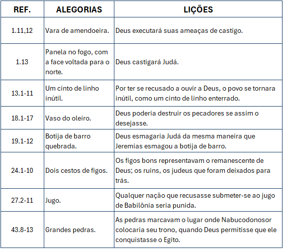

Exortação, arrependimento e esperança — O ministério profético de Jeremias
Comentarista: Elias Torralbo
Lição 4: O vaso do Oleiro: A descrição espiritual da nação
Data: 26 de outubro de 2025
TEXTO PRINCIPAL
“Mas, ó homem, quem és tu, que a Deus replicas? Porventura, a coisa formada dirá ao que a formou: Por que me fizeste assim?” (Rm 9.20).
RESUMO DA LIÇÃO
A Soberania de Deus garante o sucesso de seu propósito, mesmo que o seu povo esteja em decadência espiritual.
LEITURA DA SEMANA
- SEGUNDA — Is 43.1 — O Oleiro criou Israel
- TERÇA — Lm 3.22 — As misericórdias do Oleiro
- QUARTA — Sf 3.9-20 — O Oleiro e a sorte do seu povo
- QUINTA — Jr 29.11-14 — Os planos do Oleiro são os melhores
- SEXTA — Jr 25.4 — O Oleiro enviou profetas para advertir seu povo
- SÁBADO — Ez 36.16-33 — O Oleiro planeja restaurar o seu povo
OBJETIVOS
- COMPREENDER a parábola da casa do oleiro;
- DESTACAR a soberania de Deus;
- MOSTRAR que a mensagem de Jeremias era de advertência, esperança e amor.
INTERAÇÃO
Prezado(a) professor(a), na lição deste domingo, veremos um dos textos bíblicos do livro de Jeremias mais conhecidos. A visita do profeta à casa do oleiro, onde recebeu uma mensagem para entregar ao povo. Embora a condição de Judá fosse de falência espiritual, Deus ainda amava e chamava seu povo ao arrependimento. Tudo o que eles teriam que fazer era permitir serem moldados pelo Criador, conforme a sua soberana vontade.
ORIENTAÇÃO PEDAGÓGICA
Professor(a), para a aula de hoje, sugerimos que seja reproduzido o quadro abaixo com algumas lições práticas que Deus apresentou a Jeremias. Deus utilizou diversos métodos e modos para comunicar sua Palavra a Judá. Utilize o quadro para explicar à classe que temos muito a aprender por meio destas lições. Enfatize o amor e o cuidado de Deus para com um povo rebelde e apóstata.
TEXTO BÍBLICO
Jeremias 18.1-15
1 — A palavra do Senhor, que veio a Jeremias, dizendo: 2 — Levanta-te e desce à casa do oleiro, e lá te farei ouvir as minhas palavras. 3 — E desci à casa do oleiro, e eis que ele estava fazendo a sua obra sobre as rodas. 4 — Como o vaso que ele fazia de barro se quebrou na mão do oleiro, tornou a fazer dele outro vaso, conforme o que pareceu bem aos seus olhos fazer. 5 — Então, veio a mim a palavra do Senhor, dizendo: 6 — Não poderei eu fazer de vós como fez este oleiro, ó casa de Israel? - diz o SENHOR; eis que, como o barro na mão do oleiro, assim sois vós na minha mão, ó casa de Israel. 7 — No momento em que eu falar contra uma nação e contra um reino, para arrancar, e para derribar, e para destruir, 8 — se a tal nação, contra a qual falar, se converter de sua maldade, também eu me arrependerei do mal que pensava fazer-lhe. 9 — E, no momento em que eu falar de uma gente e de um reino, para o edificar e o plantar, 10 — se ele fizer o mal diante dos meus olhos, não dando ouvidos à minha voz, então, me arrependerei do bem que tinha dito lhe faria. 11 — Ora, pois, fala agora aos homens de Judá e aos moradores de Jerusalém, dizendo: Assim diz o SENHOR: Eis que o estou forjando mal contra vós e projeto um plano contra vós; convertei-vos, pois, agora, cada um do seu mau caminho, e melhorai os vossos caminhos e as vossas ações. 12 — Mas eles dizem: Não há esperança, porque após as nossas imaginações andaremos; e fará cada um segundo o propósito do seu malvado coração. 13 — Portanto, assim diz o SENHOR: Perguntai, agora, entre os gentios quem ouviu tal coisa? Coisa mui horrenda fez a virgem de Israel! 14 — Porventura, deixar-se-á a neve do Líbano por uma rocha no campo? Ou deixar-se-ão as águas estranhas, frias e correntes? 15 — Contudo, o meu povo se tem esquecido de mim, queimando incenso à vaidade; e fizeram-nos tropeçar nos seus caminhos e nas veredas antigas, para que andassem por veredas afastadas, não aplainadas.
COMENTÁRIO DA LIÇÃO
INTRODUÇÃO
Nesta lição, veremos o chamado divino para que o profeta fosse à casa do oleiro. Embora a condição dos judeus era de falência espiritual, Deus ainda os amava e chamava ao arrependimento. Eles precisavam permitir ser moldados pelo Criador, conforme a sua soberana vontade. Nós veremos a relação entre a soberania de Deus e a cooperação humana; a restauração de uma nação; e que os planos de Deus não podem ser frustrados, pois Ele é Soberano.
I. A PARÁBOLA DA CASA DO OLEIRO
1. Compreendendo o texto. O vocábulo “parábola” é de origem grega, cujo significado é “colocar ao lado de”. Nas Escrituras Sagradas, o seu uso visa transmitir uma mensagem e valores espirituais por meio de linguagem fácil, já conhecida, favorecendo assim a sua compreensão.
No capítulo 18 do livro de Jeremias encontramos a “Parábola da Casa do Oleiro”. Por intermédio dela, o profeta recebeu, com clareza, a mensagem de Deus a ser transmitida ao seu povo. Nesta parábola, o oleiro representa o próprio Deus, o Criador. Ele é visto como um oleiro, trabalhando na formação de um vaso de barro que representa o povo de Judá. Este foi o método que Deus usou para trazer ao profeta uma mensagem de advertência e de arrependimento a Judá.
2. Jeremias recebe a mensagem. O profeta recebeu a ordem divina para que se dirigisse à casa do oleiro sob a promessa de que lá receberia uma nova mensagem a ser entregue ao povo (Jr 18.1,2,5) e, logo que assistiu à confecção do vaso, recebeu a mensagem de Deus (Jr 18.4,5). O trabalho do oleiro era comum nos dias de Jeremias, mas este fato representou vividamente o controle de Deus sobre o seu povo, demonstrando o seu trabalho em moldá-los e permitir que desfrutassem de seus planos e de evitar o mal que os cercava. Foi, portanto, diante do trabalho de um oleiro que Jeremias recebeu uma mensagem que deveria ser transmitida a Judá.
3. A mensagem da casa do oleiro. O conteúdo central da mensagem que Jeremias recebeu de Deus na casa do oleiro mostra a seguinte condição de Judá: não faltava culto, o que faltava era adoração genuína; Judá praticava a idolatria. Com base no que viu na casa do oleiro, a mensagem de Jeremias desvendou a raiz da idolatria que imperava, pois, diante da Palavra do Senhor, eles diziam: “Andaremos segundo as nossas imaginações; e cada um fará segundo o propósito do seu mau coração”, pois eles estavam mergulhados em “vaidade” (Jr 18.12,15). Substituir o lugar que pertence somente a Deus em nossos corações, é idolatria. Sendo assim, ao afirmar que andaria segundo a sua própria vontade, Judá estava colocando Deus de lado. No entanto, a mensagem que Jeremias recebeu na casa do oleiro reafirmava o controle do Senhor como Soberano e que tem o seu povo em suas mãos. A mensagem não tratava somente da soberania de Deus, mas também de sua longanimidade. Nela havia tanto a advertência (v.6) quanto a esperança (vv.8-10). Isso significa que o conteúdo desta mensagem consiste, basicamente, no interesse de Deus de que o seu povo se arrependesse e aceitasse ser cuidado por Ele.
II. A SOBERANIA DE DEUS
1. Soberania. A soberania de Deus indica sua onipotência, autonomia e independência. Na prática, isso significa que o Eterno é poderoso para fazer tudo o que deseja. É livre para fazer como e quando quiser, além de não depender de nada e nem de ninguém para ser quem Ele é. O conceito de soberania divina esteve presente no ministério do profeta Jeremias (32.17-19). Ele falou acerca de Nabucodonosor como sendo uma escolha soberana de Deus (25.9; 27.6; 43.10). Nabucodonosor também reconheceu este atributo divino, ao afirmar “quão grandes são os seus sinais, e quão poderosas as suas maravilhas! O seu reino é um reino sempiterno, e o seu domínio de geração em geração” (Dn 4.3). Ao assistir o oleiro trabalhando, Jeremias pôde compreender claramente a mensagem de que, assim como o oleiro é livre para fazer o vaso que desejar a partir da argila em suas mãos, assim também o Senhor pode fazer de seu povo o que lhe apraz (18.6). A soberania divina, portanto, é o âmago desta mensagem.
2. Familiarizado com a soberania de Deus. Quando foi chamado por Deus, Jeremias ouviu, dentre outras palavras, a expressão “formar” (1.5) e esta é oriunda do hebraico yatzar, que quer dizer “modelar” e também aponta para o ato de “criar”. Essa mesma ideia aparece na informação “formou o SENHOR Deus o homem do pó da terra” (Gn 2.7) e é replicada em textos que confirmam o Senhor como o oleiro, isto é, Ele é o yotzer, aquEle que molda o seu povo, conforme a sua soberana vontade (Is 26.16; 45.9; 64.8). Sendo assim, a partir de sua própria experiência, nenhuma outra ideia sobre Deus tinha mais clareza para Jeremias do que o seu poder de formar, moldar e trabalhar em pessoas de acordo com a sua soberana e boa vontade. Falar do que viu na casa do oleiro, como pano de fundo da intenção de Deus em trabalhar o seu povo e em seu favor, foi falar de algo que Jeremias vivia integralmente. Ele poderia afirmar sobre o poder de Deus em transformar o simples barro em vasos de valor em suas mãos, desde que houvesse submissão ao seu querer.
3. A cooperação humana. No texto de Jeremias 18 podemos ver a ação de Deus, do profeta e do povo. Jeremias transmitiu a mensagem do Senhor, mas o povo não respondeu positivamente a ela. Logo, além da soberania divina haveria também o livre-arbítrio das pessoas em aceitar ou não a mensagem. No entanto, caso houvesse aceitação da mensagem e arrependimento, Deus daria outro rumo à história de seu povo. Em vez de entregá-lo aos inimigos, Ele o protegeria deles, mas caso não lhe desse ouvidos, o mal seria inevitável (7.8; 9.10). O texto não diz que o oleiro quebrou o vaso, mas que o vaso se quebrou nas mãos dele, como uma indicação de Deus para que, à semelhança daquele vaso, o seu povo se rendesse e se quebrantasse em suas mãos. A mensagem na casa do oleiro também nos mostra que a cooperação humana não invalida a soberania de Deus, assim como a soberania do Senhor não exclui a responsabilidade humana.
III. ADVERTÊNCIA SIM, ESPERANÇA E AMOR TAMBÉM
1. Advertência divina. O ministério de Jeremias serviu de sinal ao povo de Deus e, conforme se vê em todo o seu livro, a exortação é a sua tônica. O povo de Judá foi avisado sobre o iminente juízo divino que o aguardava, caso não se arrependesse e permanecesse em seus maus caminhos (18.11). Se por um lado Jeremias representava a advertência, a exortação e a punição divina, por outro lado, o exercício de seu ministério oferecia duas certezas ao povo: Deus ainda estava no meio do seu povo e com ele falava, e Ele ainda se interessava e trabalhava pela sua restauração. A presença de Deus e o seu interesse pelo povo fundamentaram a mensagem recebida a partir do que Jeremias viu na casa do oleiro, a fim de tocar a consciência de Judá para que se voltasse para Deus e se arrependesse de seus maus caminhos. Deus estava chamando a atenção de seu povo.
Esta advertência fundamentou-se na capacidade divina de fazer o que bem entender, isto é, tanto manter o seu plano original quanto mudar de plano (18.5-11).
2. Uma advertência de amor e de esperança. A mensagem de Jeremias não foi uma demonstração da ira divina contra Judá, mas de sua justiça que, ao invés de excluir o seu amor, o exalta, conjuntamente com a esperança de que só em Deus o seu povo pode ter. Deus afirmou que, a semelhança do vaso nas mãos do oleiro, assim o seu povo estava em suas mãos, assegurando-lhe que poderia descansar em seus cuidados paternais (18.6). Toda esta constatação está em conformidade com o pensamento de Deus sobre o seu povo, que eram pensamentos de paz e não para o mal (29.11-13). O Senhor usou o profeta para revelar os seus pensamentos, sentimentos e propósitos para com o seu povo, ao afirmar que ele era como filhos preciosos e motivo da comoção de seu coração (31.20,33).
3. A restauração de um povo. O interesse de Deus não era destruir o seu povo, mas restaurá-lo (18.8,9), embora a falta de arrependimento resultasse em sua destruição (10-17). Ainda com a imagem do vaso sendo trabalhado pelas mãos do oleiro, é possível notar o interesse de Deus em forjar uma Judá forte, preparada e capaz de refletir a sua glória e o seu caráter às nações.
Deus prometeu abençoar todas as famílias da Terra por intermédio da descendência de Abraão (Gn 12.3). O Eterno constituiu Israel como “luz para os gentios” (Is 49.6), em outras palavras, a razão e o propósito da existência de Israel como povo de Deus se limitam ao cumprimento de seu propósito de anunciar e tornar as grandezas de Deus conhecidas entre as nações.
CONCLUSÃO
O capítulo 18 de Jeremias traz uma mensagem de advertência e de exortação, de amor e de esperança a um povo pelo qual Deus tem um amor incondicional, mas que lhe exige santidade e, em alguns momentos, arrependimento e mudança de rota.
ESTANTE DO PROFESSOR
OLSON, Roger. Contra a Teologia Liberal. Rio de Janeiro: CPAD, 2005.
HORA DA REVISÃO
- Segundo a lição, o que é uma parábola?
- Qual o propósito da parábola nas Escrituras Sagradas?
- Qual a parábola encontramos no capítulo 18 de Jeremias?
- O que representa o vaso de barro na parábola do capítulo 18 de Jeremias?
- Qual era a condição de Judá revelada a Jeremias na casa do oleiro?